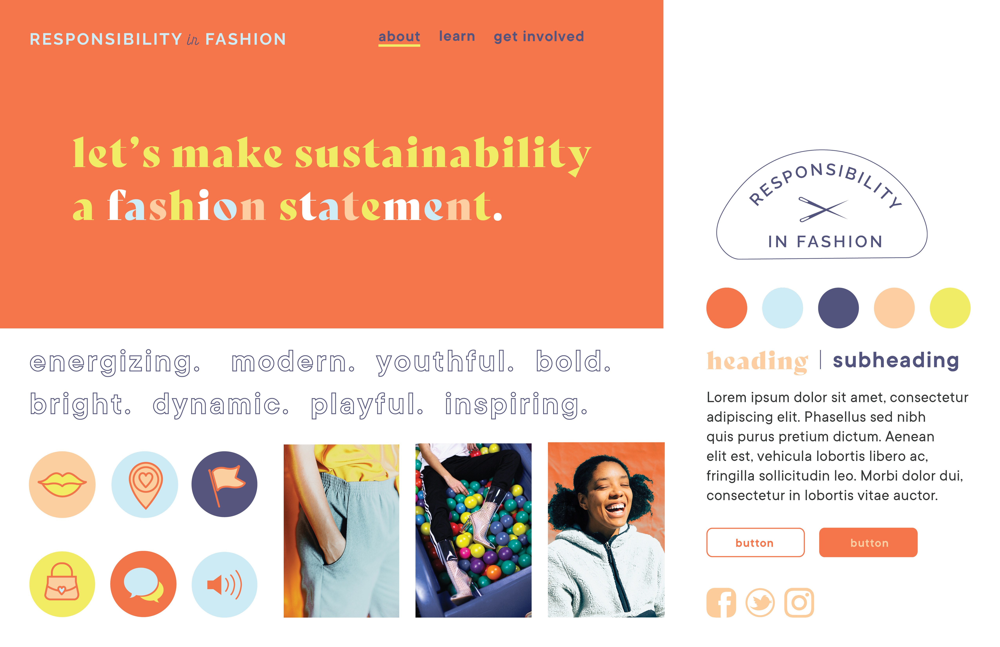

CTA: "See How"
The font of the webpage will feature a quote "Let's make sustainability a fashion statement." Right under this will be a CTA button that says, "See How." This will lead to a page with more info on shopping sustainably and different ways to get involved.